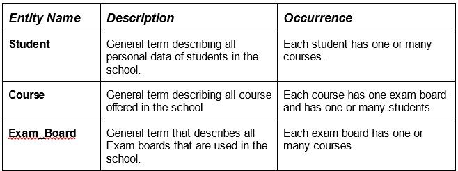
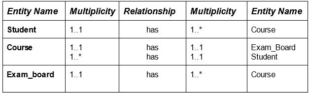
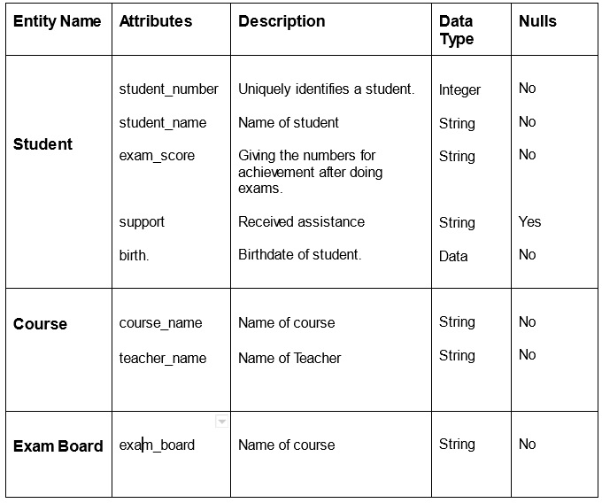
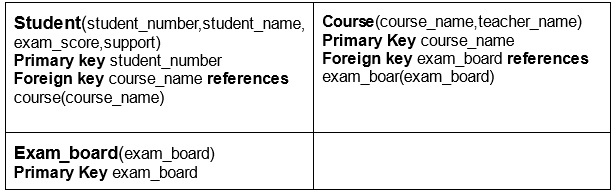
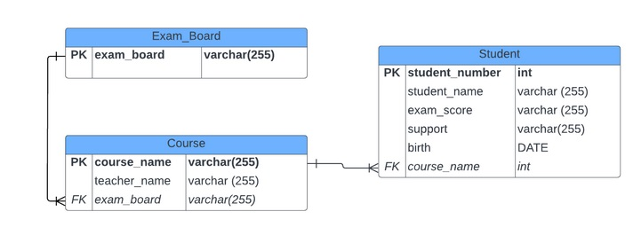
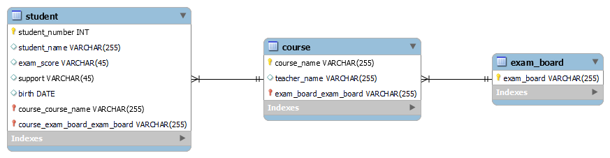

School Database
For a school database. The following entities were be identified:

Relationship types
The relationship types are: Student has one or many courses. Course has an Exam_Board. Exam_board has many courses.
The description of the relationships are:

The description of the attributes are:

The relations for the school database are:

The database design is represented by the Entity Relationship Diagram (ERD) below which provides a unified view of the database and its relational model.

My SQL Workbench

SQL Script
- MySQL Workbench Forward Engineering
SET @OLD_UNIQUE_CHECKS=@@UNIQUE_CHECKS, UNIQUE_CHECKS=0;
SET @OLD_FOREIGN_KEY_CHECKS=@@FOREIGN_KEY_CHECKS, FOREIGN_KEY_CHECKS=0;
SET @OLD_SQL_MODE=@@SQL_MODE, SQL_MODE='ONLY_FULL_GROUP_BY,STRICT_TRANS_TABLES,NO_ZERO_IN_DATE,NO_ZERO_DATE,ERROR_FOR_DIVISION_BY_ZERO,NO_ENGINE_SUBSTITUTION';
-- -----------------------------------------------------
-- Schema school_db
-- -----------------------------------------------------
-- -----------------------------------------------------
-- Schema school_db
-- -----------------------------------------------------
CREATE SCHEMA IF NOT EXISTS `school_db` DEFAULT CHARACTER SET utf8 ;
USE `school_db` ;
-- -----------------------------------------------------
-- Table `school_db`.`exam_board`
-- -----------------------------------------------------
CREATE TABLE IF NOT EXISTS `school_db`.`exam_board` (
`exam_board` VARCHAR(255) NOT NULL,
PRIMARY KEY (`exam_board`))
ENGINE = InnoDB;
-- -----------------------------------------------------
-- Table `school_db`.`course`
-- -----------------------------------------------------
CREATE TABLE IF NOT EXISTS `school_db`.`course` (
`course_name` VARCHAR(255) NOT NULL,
`teacher_name` VARCHAR(255) NULL,
`exam_board_exam_board` VARCHAR(255) NOT NULL,
PRIMARY KEY (`course_name`, `exam_board_exam_board`),
INDEX `fk_course_exam_board_idx` (`exam_board_exam_board` ASC) VISIBLE,
CONSTRAINT `fk_course_exam_board`
FOREIGN KEY (`exam_board_exam_board`)
REFERENCES `school_db`.`exam_board` (`exam_board`)
ON DELETE NO ACTION
ON UPDATE NO ACTION)
ENGINE = InnoDB;
-- -----------------------------------------------------
-- Table `school_db`.`student`
-- -----------------------------------------------------
CREATE TABLE IF NOT EXISTS `school_db`.`student` (
`student_number` INT NOT NULL,
`student_name` VARCHAR(255) NULL,
`exam_score` VARCHAR(45) NULL,
`support` VARCHAR(45) NULL,
`birth` DATE NULL,
`course_course_name` VARCHAR(255) NOT NULL,
`course_exam_board_exam_board` VARCHAR(255) NOT NULL,
PRIMARY KEY (`student_number`, `course_course_name`, `course_exam_board_exam_board`),
INDEX `fk_student_course1_idx` (`course_course_name` ASC, `course_exam_board_exam_board` ASC) VISIBLE,
CONSTRAINT `fk_student_course1`
FOREIGN KEY (`course_course_name` , `course_exam_board_exam_board`)
REFERENCES `school_db`.`course` (`course_name` , `exam_board_exam_board`)
ON DELETE NO ACTION
ON UPDATE NO ACTION)
ENGINE = InnoDB;
SET SQL_MODE=@OLD_SQL_MODE;
SET FOREIGN_KEY_CHECKS=@OLD_FOREIGN_KEY_CHECKS;
SET UNIQUE_CHECKS=@OLD_UNIQUE_CHECKS;